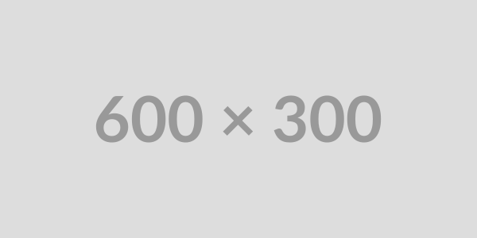

Duro Festival XXL vuelve los días 10 y 11 de octubre de 2026 al espacio Can Guitet de Montmeló (Barcelona) con su edición más grande hasta la fecha. Más de 60 artistas repartidos en 3 escenarios y dos días de techno al aire libre con nombres como Ben Klock, Kobosil y Andres Campo en el cartel. Si buscas un festival que no se anda con rodeos, Duro Festival XXL hace honor a su nombre.
Información del festival
Fecha
Lugar
Compra tu entrada para el festival y disfruta de la mejor música techno y hard en un entorno único. No te pierdas la oportunidad de vivir una experiencia inolvidable en Duro Festival XXL. ¡Te esperamos!